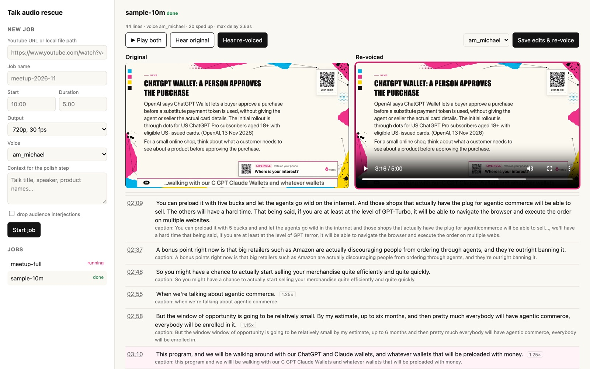
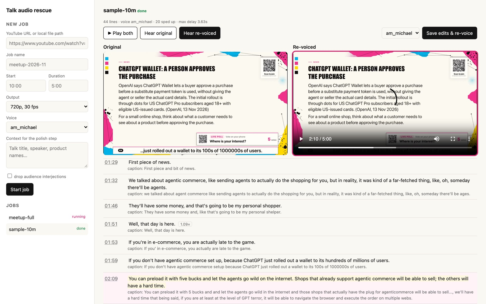
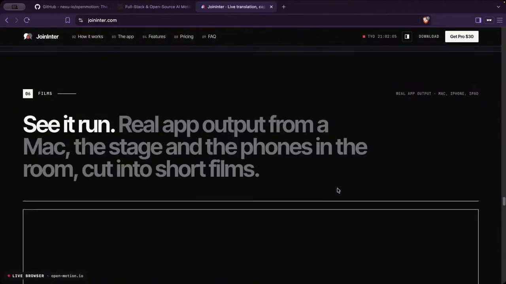
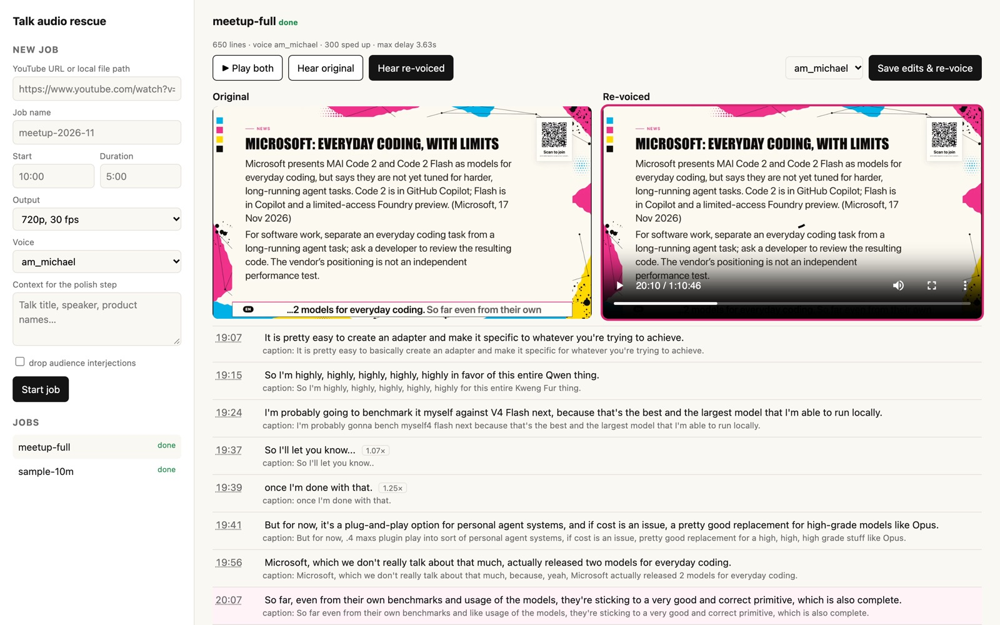

BUILDING IN PUBLIC · NOTES
The audio was gone. The captions weren’t.
We livestreamed a 70-minute meetup talk to YouTube, and the sound was unusable. But live captions were running at the bottom of every slide. So I read them back off the screen and gave the talk a new voice, on a single Mac.
The problem
The talk was “Agents at work: payments, models and machines” by Martin Atrin (LinkedIn) at the Polygonfaces AI Society. The slides were great, the room was full and the stream ran. Afterwards we listened back.
What went wrong: both microphones in the room were recording at the same time, and the stream mixed them into one track. The two signals smeared over each other. The voice ended up roughly 2 dB above the noise. You could tell someone was talking, but not what he was saying.
One thing had worked perfectly: a live-caption bar along the bottom of the slides. Every word that was said, give or take the usual speech-recognition slips, was already in the video. It just wasn’t in the audio.
Before and after
The same twenty seconds, at 19:04 in the talk. Turn the sound on.
BEFORE · ORIGINAL STREAM AUDIO
AFTER · RE-VOICED FROM THE CAPTIONS
First, I tried to save the real voice
Before re-voicing anyone, I tried to rescue the original audio on a five-minute sample. I used three local tools: DeepFilterNet, Demucs, and Demucs followed by DeepFilterNet. To judge the results objectively, not just by ear, I ran Whisper over each one.
- Original: Whisper hallucinated French fragments.
- DeepFilterNet: the noise went, and the voice with it. Whisper heard “Thank you. Thank you. Thank you.”
- Demucs: hardly any change. Whisper heard “I am driving 193 reasons for driving…”
That settled it. The speech information simply isn’t in the recording any more. No enhancer can pull a voice back out of two microphones mixed into each other.
Plan B: read the screen
OCR. The caption bar is always in the same place, so I crop just that strip, sample it four times a second, skip frames where nothing changed, and read the text with Apple Vision, which is built into macOS. I had looked at a large OCR model, but for one crisp line of text, Vision is fast, free and nearly perfect. The only systematic slips were “Al” for “AI” and “I’II” for “I’ll”. Five minutes of video took 43 seconds.
Stitching. A live caption bar is a moving window. The line scrolls, starts with “…”, and words change while the speech recognizer is still deciding. I align each new state against the end of the transcript, let later versions overwrite words that were still being revised, and keep the time each word first appeared. Then I split the result into sentences.
Polish. The captions came from live speech recognition, so they contain their own mis-hearings: “vote in Nep poll”, “agenticommerce”, “Kweng Fur”. Headless Claude Code gets the sentences in batches of about forty, along with the talk’s title, speaker and topics. It returns the same items with fixed wording. Because the IDs are fixed, the timings can’t drift. “This entire Kweng Fur thing” became “this entire Qwen thing”.
The LLM fixes what it can recognise and guesses where it can’t. So the raw caption stays visible next to every polished line.
Martin spotted one I missed. Someone in the audience said “you can do that on Grok bot”. The live caption heard “RPL”, and the polish step, with nothing to go on, turned it into “the app”. Grok bot comes up again later in the talk, so a second pass over the full transcript, with a list of names that appear in it, would very likely catch cases like this. It’s the obvious next improvement. For this video I left it as it is.
Voice. Kokoro-82M runs locally through MLX on Apple Silicon. After warm-up it renders about six seconds of speech in a third of a second. Each sentence gets the time until the next sentence starts. If the voice runs longer, the line is re-rendered faster, up to 1.25×. If it still doesn’t fit, the following lines wait for the next pause. There’s no lip-sync to worry about, because it’s slides.
Remux. ffmpeg keeps the picture, swaps the audio, normalises the loudness and adds the polished transcript as a subtitle track.
A small UI to check the result
Reading a JSON file is no way to judge a voice-over, so I built a small local page. It plays the original and the re-voiced version side by side, in sync, and you switch between them with one click. Under the players, every line shows the polished text, the raw caption it came from, and a speed tag where it had to be squeezed.

When a line is wrong, I fix it in place and click “Save edits & re-voice”. Only the voice step runs again, which takes about 30 seconds for five minutes of video.

The bug the sample didn’t show
The five-minute sample looked great, so I ran the whole talk. The report came back with a maximum delay of 58.7 seconds. On the sample it had been 3.6.
The cause: at around 66 minutes the stream switches to a screen share of a website. There’s no caption bar on screen, so the OCR read whatever page text scrolled through that strip: “Work email”, “Pro for thirty dollars”, “Cookie settings”. That gave twelve “sentences” in four seconds. Each one was voiced in full and pushed everything after it back.

The fix was cheap. The caption bar has a clear pixel signature: a white margin, the dark “EN” badge and a mostly bright text area. When all three are missing, that frame is skipped. On a normal caption clip the output stayed byte-for-byte the same, and the screen share was simply skipped.
| FULL TALK | FIRST RUN | WITH BAR DETECTION |
|---|---|---|
| Sentences voiced | 668 | 650 |
| Max delay vs. original timing | 58.7 s | 3.6 s |
| Median / 95th percentile delay | — | 0.0 s / 1.95 s |
| Lines spoken faster (≤ 1.25×) | 306 | 300 |
The lesson: a sample tests the method, not the whole recording. And a single summary number caught what spot-listening would have missed.
How long it takes
For the full 71-minute talk at 720p, which is plenty for slides, starting from the downloaded video:
- OCR: about 10 minutes
- Polish: about 4 minutes
- Voice: about 4 minutes
- Remux: about 1.5 minutes
That’s roughly 20 minutes in total. Whisper run over the new narration repeats the polished transcript word for word.

WHAT IT DOESN’T DO
No captions, no voice: the two live browser demos (about five and a half minutes) had no caption bar, so they stay silent. The new voice is a stock Kokoro voice, not Martin’s. Cloning his voice would need his consent, and for slides a clear narrator is enough. Some of the polish step’s readings of garbled captions are guesses, so the transcript deserves one human read before anything is published.
Doing it again
If this ever happens again, it’s one command. Every step is skipped when its output already exists, so fixing a line only re-runs the voice:
./setup.sh
./rescue.py "https://www.youtube.com/watch?v=…" --name meetup --height 720 \
--context "talk title, speaker, product names"The stack: yt-dlp and ffmpeg, Apple Vision through ocrmac, Claude Code for the polish, Kokoro on MLX through mlx-audio, and a small standard-library Python server for the UI. Everything except the polish step runs on the Mac.
The code is open source: doyouknowmarc/livestream-audio-rescue on GitHub ↗. The README covers setup, the options, the review UI and how to adapt the caption crop to a different video.
The original stream is on YouTube ↗. Thanks to Martin Atrin for the talk and for letting me use it here. Connect with him on LinkedIn, and with me if you try this on your own recording.